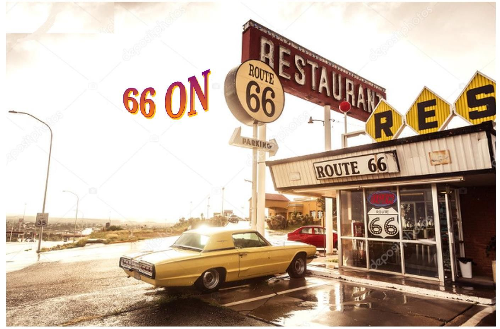
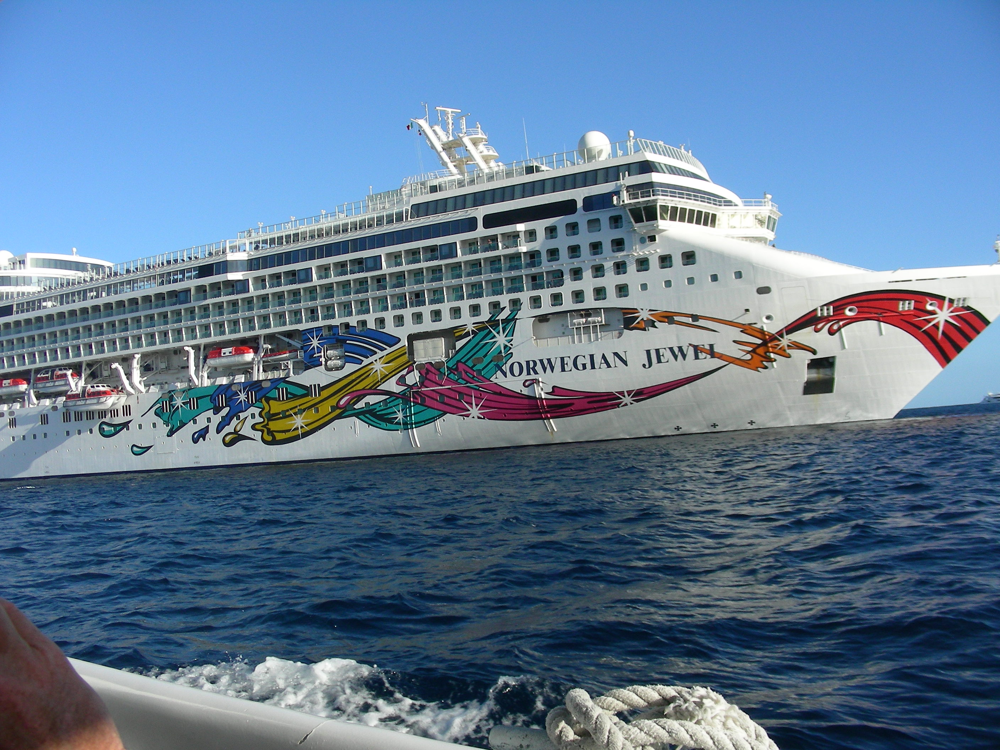
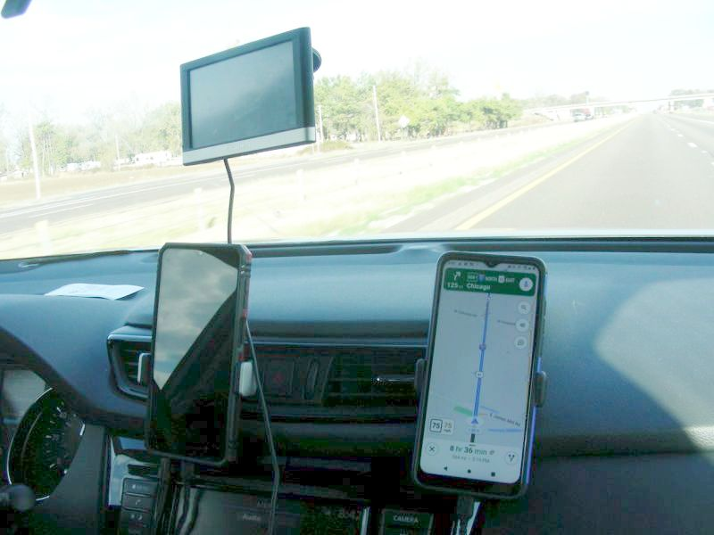

Introduction
Dorreen and I are big fans of the SiriusXM Satellite Radio Station “Outlaw Country”. We love the diversity of the music and recommend it to all music lovers. It features several shows hosted by very talented and unusual hosts, like the truly outrageous Mojo Nixon(Multi Talented Country Musician, Celebrity Extraordinaire) and Elizabeth Cook (Fabulous Singer, Songwriter, Performer,Etc.), along with a bunch of other Multi Talented Hosts. The station concentrates on Genuine, Traditional Country Music, while throwing in some Excellent Down Home Rock A Billy, Blues, Rock, and a whole lot more.
While listening to the station we discovered that “Outlaw Country” hosts an “Outlaw Country Cruise” featuring numerous musical acts (that are played on the station), performing on the Cruise Ship. The first time we heard of the Cruise, it was running out of Florida, but an up and coming Cruise would be running out of Los Angeles, California, Nov.3 – Nov.8 (Thurs.-Tuesday), 2022. The Cruise was billed as “Outlaw Country West”. The Route of the Cruise was from Los Angeles, Ca., down to Cabo San Lucas, the tip of Baja Mexico. The Ship would be anchored there for a day; people could do what they would like, while they were there. (The Cruise offers many different types of On-Shore activities). From Cabo the Ship would go North to Encenada, Mexico for another day, and then dock in California on Tuesday, Nov.8,2022. We were interested and started to talk about it.
We had never been on a Music Oriented Cruise before, but knew of their existence, as coming off a Disney Cruise we saw people coming off a Cruise Ship of a Heavy Metal Cruise. The people looked interesting and we thought a musical cruise might be fun. We figured we would never find out if we didn’t do it, first hand. So we booked the trip. Full steam ahead! We were booked to Cruise on The Norwegian Jewel.

At first, we figured that we would just fly in to LA from Chicago. Get on the Cruise Ship and go. But after a little thought, and my 66th Birthday in March, we thought it might be cool to drive the Original Historic Route66 road from Chicago to Los Angeles. This is something we always wanted to do, and what a perfect combination of these trips for an adventure. Thus, the vacation, 66 on Route 66 was born.
But, can we really do it? And, how to do it? Where to start?
Since it was only the beginning of April, 2022 we didn’t sweat it. We had plenty of time to plan the trip. I googled the distance from Chicago to La. via Route66. 2448 miles. OK, I thought. Good Start. Using my past Road Driving experience, I doubled the amount(averaging 50 miles per hour by truck back when the speed limit was 55), 48 hours driving. Figuring 8 hours driving a day(give or take). 6 days. Of course, we would be stopping all over the place, so more time would be required. But, we had the time and decided that our adventure was feasible. If we found ourselves, lingering too long somewhere, and running out of time, we would, simply, pull up stakes wherever we were, and hot rod it the fastest way we could find to make the Nov. 3 Cruise, in plenty of time. We would check out the Internet for advice, ideas, books, maps, etc. to fill in all the other blanks.
After scouring book stores and the Internet, we decided to use the book, Moon Route 66 Road Trip , by Jessica Dunham. (Other Travel Books are available from http://moon.com). This book suited our purpose as it is smaller in size that a regular book(8 inches tall,5 inches wide), and could be stored easily in the car. The book starts in Chicago taking Route 66 all the way to Los Angeles. The book lists multiple things to see and do, while navigating you throughout Route 66. Perfect for our trip.
In our spare time Dorreen and I went through the book, page by page, state by state, making a list of things to do. We would be going through Illinois, Missouri, Kansas, Oklahoma, Texas, New Mexico, Arizona, and California. We made a preliminary trip agenda. \Route66Project\Intro\OriginalItinerayRoute66stopsandMap.html. We also found some ghost towns(via Intenet) to check out along the way. \Route66Project\Intro\GhostTownMain.html
After all our research, we decided we would leave on Sunday, October 23rd to begin the adventure. We would be boarding our cruise ship on November 3rd. We thought that would be enough time for our Route66 Adventure. To give us even more breathing room, we decided to do the Illinois portion of Route66 on a couple of weekends before the actual start date of October 23rd. We broke the Illinois part into 2 segments; from Chicago to Joliet and Joliet to Pontiac, ending at the Route66 Museum in Pontiac, Illinois. We actually did each segment on 2 separate Saturdays. The first segment we did was from Joliet to Pontiac and the second was from Chicago to Joliet. Each segment was done in 1 complete Saturday, leaving home in Crystal Lake, Illinois and returning back home to Crystal Lake, Illinois, each Saturday. I have listed these in geographical order(to make linear sense); Chicago to Joliet, Joliet to Pontiac. On October 23rd we drove straight to Pontiac, Illinois(South on Interstate355 to South Interstate55 to Pontiac) and got on Route66 in Pontiac to begin our adventure.
While doing the Illinois Section of Route66 from Chicago to Pontiac (2 separate Saturdays), we relied on the book, previously mentioned, and simply following Route66 signs. We quickly discovered that it might be in our best interest to have some kind of Navigation App to guide us, since it was very easy to miss Route66 signs, while winding through old Route66 roadways. We downloaded the Route66 Navigation App for our phone and it was a blessing!
In hindsight, the complete Route66 trip would have been very difficult; maybe even impossible, without this App. The Route winds back and forth all over the place and dead ends in several places, which can be frustrating and exhausting (remember, you're driving and concentrating). This App literally tells you when and where to turn all throughout the Route. I sincerely recommend this App, or another one like it if you can find one.

Conclusion To The Introduction
Our goal was to go to Los Angeles, California, via Historic Route66 and get on the Norwegian Jewel Cruise Ship. On the ship we would enjoy multiple concerts, wonderful food and drink, fun company,etc. We would be cruiseing to Cabo San Lucas, Mexico(Go Marlin Fishing) and cruise back(Another Stop In Encendada) to La. We would travel back home anyway we wanted. We would decide the route and events after the cruise. Maybe pickup some Route66 stuff we missed, or explore a completely different route, or maybe a combo of the two. We were in no rush to get home.
Conclusion To The Introduction Conclusion
I think that it is important to note that Historic Route66 runs through big cities like Chicago, St. Louis, and Los Angeles. All of these cities offer numerous adventures within their confines. If you wished to explore these cities while traveling Route66 you could spend at least a week in each city. You could plan a Route66 trip including some of these cities, or all of them, if you wanted. But you would have to carefully plan your trip with a good amount of time devoted to any particular city along with the actual travel time along Route66.
This was not our intention. Our mission was to travel the Historic Route66 and get the feel of the early route from Chicago to Los Angeles. Find out what's been lost. What's been gained after the Interstates took over? What's the geography like? The people? How's the Marlin Fishing in Cabo in early November? (I've been there before and sometimes it's excellent!)
These were our goals, and if you continue, you will find that we were successful!